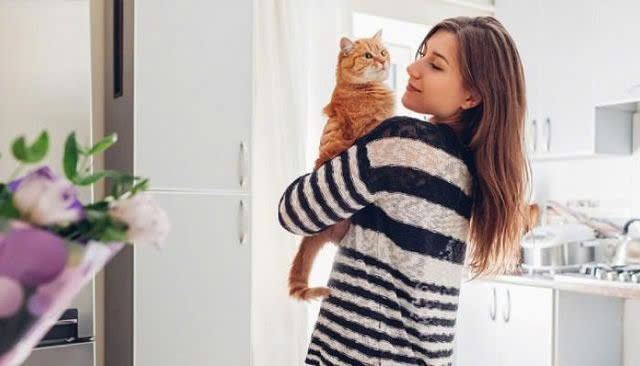
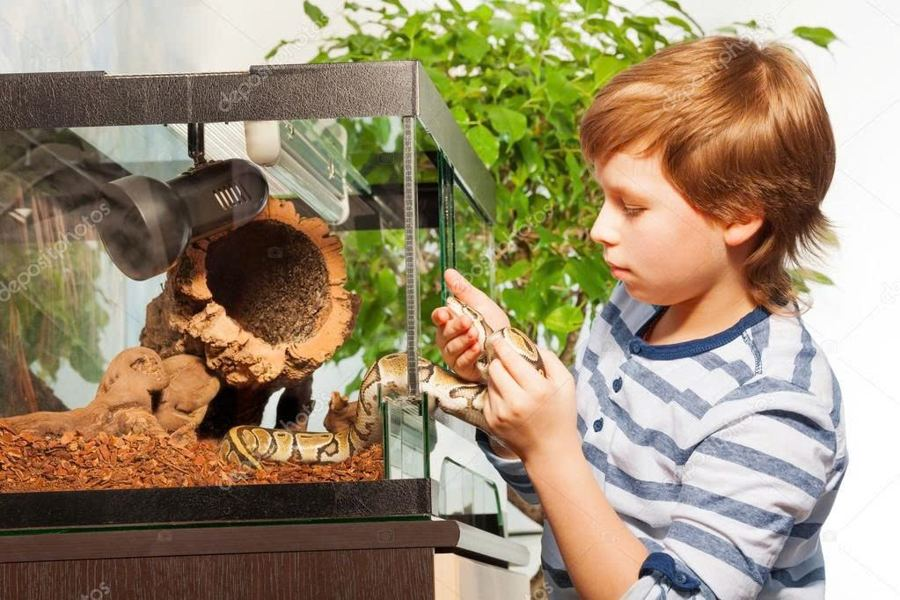
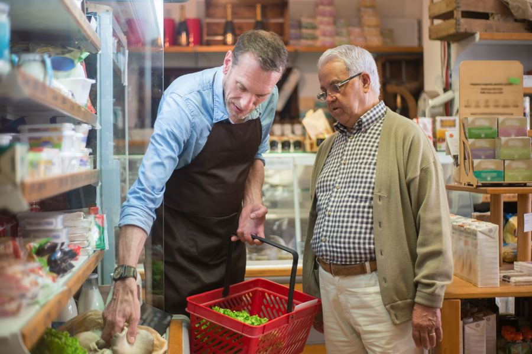

Speaking (mèo, rắn, lần giúp ai đó)
Part 1. In this part, I am going to ask you three three questions about yourself and your interests. You will have 30 seconds to reply to each question. Begin speaking when you hear this sound.
Today it is hot so I am wearing a dress/ a T-shirt and a pairs of jeans. It makes look better and confident. Also, I feel more comfortable. I usually choose light clothes in summer to stay cool. It also helps me feel ready for a busy day.
I was born in a small village in the countryside. It is about 40 km from Hanoi. It is nice and quiet. I reall love my hometown because the air is fresh, the people are friendly and kind. The food is healthy and cheap. Every time I visit, I feel very relaxed and peaceful there. I hope to bring my own children back to see it one day.
I really love my mother. She is 50 years old. She is a teacher of English. She is small but pretty with long hair and black eyes. She is hard-working and kind-hearted. She loves me with all her heart. When I have any troubles, she always stands by my side. She always gives me good advice when I feel confused. I want to become as strong and caring as her.
Part 2. In this part I’m going to ask you to describe a picture. Then I would ask you two questions about it. you will have 45 seconds for each response. Begin speaking when you hear this sound.
Look at the picture I can see a woman and four children. The woman is about 30 years ago and the children are about four or five years old. I guess they are teacher and students.
They are having a lesson in a classroom. The teacher is showing the children the letters. And the children look so curious and excited. I think they’re enjoying their lesson.
The teachers and the children are wearing colourful clothes.
I like this picture. it reminds me of my school days. The classroom looks bright and cheerful. This picture makes me want to go back and visit my old teachers.
When I was a child I played a lot of games like skipping rope, Hide and Seek or chess. They were really interesting and enjoyable. We could relax and reduce stress after school. We usually played outside with the neighborhood children until it got dark. Those were some of my happiest memories.
I totally agree that letting children actively play games will improve their thinking because they can learn a lot of skills like problem solving, decision making. They can also improve their memory and concentration. Playing games also teaches children how to work well with others. I think parents should encourage this kind of activity more.
Part 3. In this part I’m going to ask you to compare to pictures and I will then ask you two questions about them. You will have 45 seconds for each response. Begin speaking when you hear this sound


The two pictures show people playing with different animals
In the first picture, I can see a girl holding a cat while in the second picture I can see a boy holding a snake.
The cat in is a pet and live with people but the snake is not.
The people in both pictures love animals . The girl looks very gentle while holding her cat. I think the boy must be quite brave to hold a snake.
I don’t agree that animals should not be kept in the house for some reasons. First, animals are living things and they need food and protection from human. Second, they can be our friends. They can help us reduce stress when we play with them. Pets can also teach children how to be responsible. My family has always felt happier since we got our dog.
Part 4. In this part I am going to show you a picture and ask you three questions. You will have one minute to think about your answers before you start speaking. You will have two minutes to answer all three questions. Begin speaking when you hear this sound.

Tell me about a time you helped someone
How did you feel?
How to encourage people to help others?
We can tell the the reasons when they help others. The first reason is that if they don’t help, they will feel sorry someday. Another reason is that helping other people can bring us happiness. One more reason is that it is one way to develop the society. |
|---|